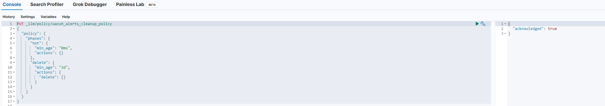

Elasticsearch Index Lifecycle Overview
Elasticsearch uses Index Lifecycle Management (ILM) to manage data over time. There are four phases:
Hot Phase
- Newest data
- Most active: frequent updates and searches
- Needs fastest access
Warm Phase
- Older data
- Less active: fewer updates, still searched
- Can be on slightly slower storage
Cold Phase
- Oldest data
- Rarely accessed, no updates
- Can be on slowest storage
Delete Phase
- Data no longer needed
- Removed from the system
Data moves through these phases based on what is called the Index Lifecycle Policy.
Creating a Lifecycle Policy
Create Lifecycle Policy for Wazuh Indexes in Elasticsearch
Login to Kibana and go to Menu -> Dev Tools
Create an ILM policy by copying and pasting the following code and then pressing the run button that looks like a 'play' symbol:
PUT _ilm/policy/wazuh_alerts_cleanup_policy
{
"policy": {
"phases": {
"hot": {
"min_age": "0ms",
"actions": {}
},
"delete": {
"min_age": "30d",
"actions": {
"delete": {}
}
}
}
}
}It will look like so:

- Perform the same steps for the following snippets of code:
PUT _index_template/wazuh_alerts_template
{
"index_patterns": ["wazuh-alerts-4.x-*"],
"template": {
"settings": {
"index.lifecycle.name": "wazuh_alerts_cleanup_policy"
}
}
}PUT wazuh-alerts-4.x-*/_settings
{
"index.lifecycle.name": "wazuh_alerts_cleanup_policy"
}This will create a policy, create a template that applies this policy to all new indices, and then also apply the policy to existing Wazuh indices.
NOTE: This is an example that will delete wazuh indices after 30 days. Adjust as needed.
Elastic Endpoint Lifecyle policy
Your Elastic agent logs are managed by a policy called "logs"
Navigate to Index Lifecycle policies, toggle the switch for "Include managed system policies" and then search for "logs"
Click to edit this policy. You will see warnings that editing a managed policy can break Kibana. Assuming you set your phases properly, you can ignore this warning.
By default, the setup "rolls over" when an index is 30 days old or exceeds 50 GB. Rollover renames the index and creates a new one to manage shard size without deleting the previous index I.E. logs-00001 rolls over to logs-00002. 00001 remains, its just not 'active'
Set your Hot, Warm, Cold phase as you see fit.
After you turn on "Cold Phase" you must hit the trash can switch to turn on the delete phase.
After you apply these changes to your policy please allow it some time to take effect on all indices.
Note: You can also just completely skip these steps and manually delete indices from the UI as you see fit / when needed.
Note: By default your rollover policy is set for 30 days. Do not set your 'delete' phase to be shorter than your rollover phase. You need your active indices to rollover into inactive indices before you delete them.**